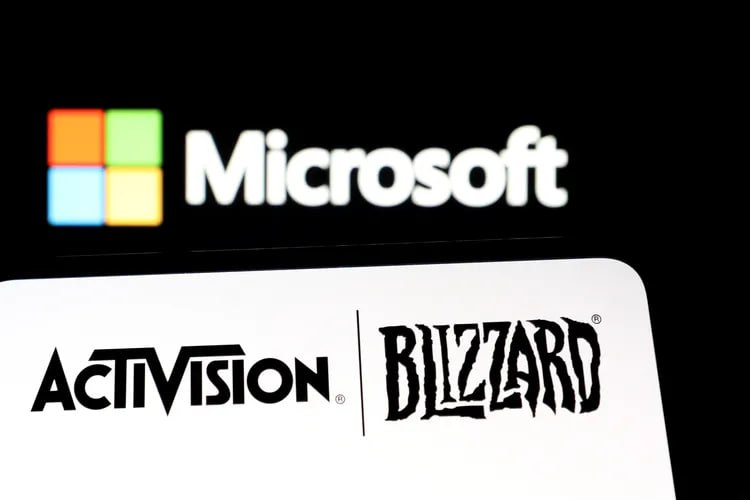
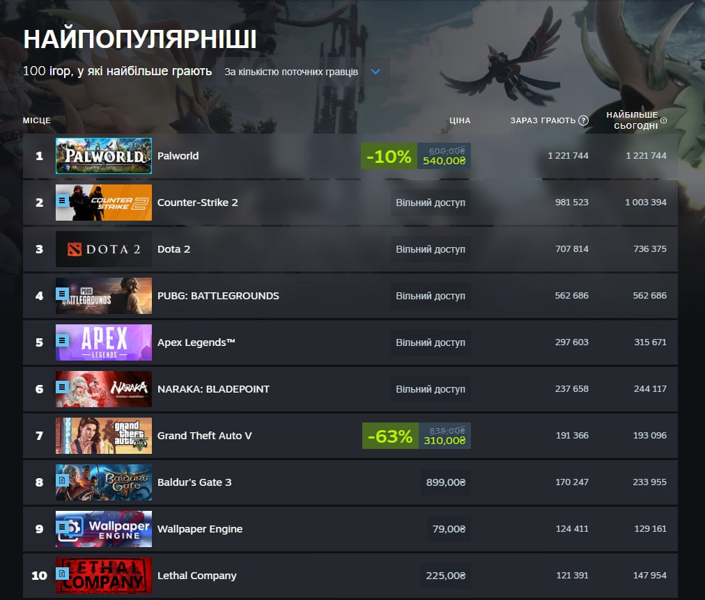
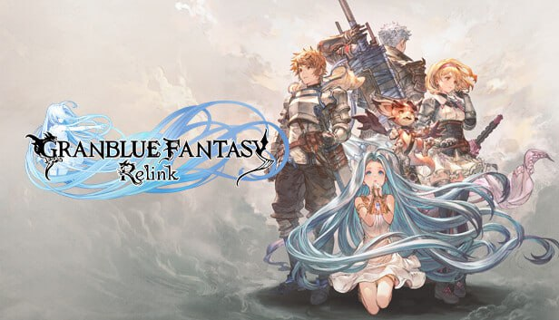
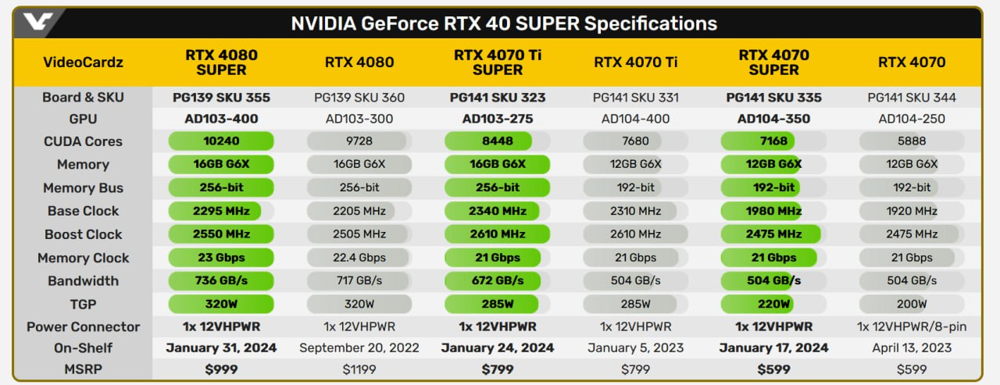

Microsoft звільняє 8% ігрового підрозділу
Теж Blizzard скасувала свій «виживач», який розробляли більше 5 років. Всіх працівників переведуть на подібний
за розмірами неанонсований проєкт. У Blizzard під звільнення попали ще президент компанії і головний дизайнер:
Майк Ібарра (Mike Ybarra) і Аллен Адам.

Palworld захоплює рейтинги Steam
За 4 дні ця гра, яка стартувала у дочасному доступі вже на 1 місці по людям, які грають прямо зараз.
Palworld — це імітація серії відомих по усьому світу Покемонів. У цій грі ми можете, як збирати Покемонів,
використовувати їх, вбивати та використовувати, як живу силу.

Демо Granblue Fantasy: Relink
Вийшла демоверсія майбутньої екшн-рольової гри Granblue Fantasy: Relink. Доступна на PlayStation 4 і 5.
Демонстрація дозволяє гравцям спробувати два різні режими. Сюжетний режим включає невеликий шматочок основної
історії, в той час як квестовий режим дозволяє гравцям виконати вибірку з трьох квестів. Ці квести можна
проходити самостійно або в режимі онлайн-кооперації з трьома іншими гравцями.
На жаль, розробник Cygames заявив, що «не планує випускати Steam-версію демо-версії», а це означає, що гравцям
на ПК доведеться почекати до виходу Granblue Fantasy: Relink, щоб випробувати її на практиці.

NVIDIA готується до випуску SUPER версій відеокарт 40 серії
Ціна SUPER версії 4080 буде коштувати 999, що на 200 дешевше в порівнянні зі стартовою ціною стандартної 4080.
RTX 4070 Ti SUPER, схоже, займе місце 4070 Ti, маючи однакову стартову ціну. Така ж ситуація з RTX 4070 SUPER
та стандартною 4070.
NVIDIA стверджує, що RTX 4070 Ti SUPER матиме потужність «у 2.5 рази більшу за RTX 3070 Ti» — хоч це не викликає
значної довіри, оскільки такі результати нерідко досягались при використанні DLSS.
Офіційно RTX Ti SUPER вийде 24 січня.